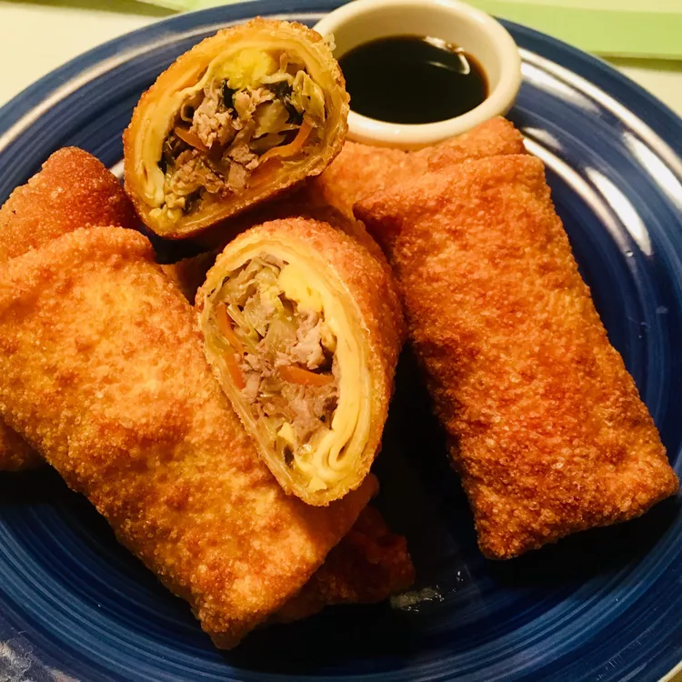

Authentic Chinese Egg Rolls

Ingredients
- Egg Roll Wrappers: 8-10 sheets
- Ground Pork: 150g (cooked and seasoned)
- Green Cabbage: 2 cups (finely shredded)
- Carrot: ½ cup (julienned)
- Bean Sprouts: ½ cup
- Garlic and Ginger: 1 teaspoon each (minced)
- Soy Sauce: 1 tablespoon
- Sesame Oil: 1 teaspoon
- Cooking Oil: For deep frying
- Slurry: 1 tablespoon flour mixed with a little water (to seal the wrappers)
👩🍳 Step-by-Step Instructions
- Prepare the Filling:
- Heat a pan with a little oil, sauté the minced garlic and ginger until fragrant.
- Add the ground pork, shredded cabbage, carrots, and bean sprouts. Stir-fry on high heat until the vegetables are tender-crisp.
- Season with soy sauce and sesame oil, then let the mixture cool completely.
- Wrap the Egg Rolls:
- Lay an egg roll wrapper flat like a diamond shape on your counter.
- Place a spoonful of the cooled filling near the bottom corner. Fold the bottom corner over the filling, fold in the left and right sides, and roll it up tightly.
- Seal the final corner using the flour-and-water slurry.
- Deep Fry and Serve:
- Heat cooking oil in a deep frying pan over medium heat.
- Carefully drop the wrapped egg rolls into the hot oil and fry until they turn golden brown and crispy (about 4-5 minutes).
- Drain excess oil on paper towels and serve hot with sweet and sour sauce!
Your crispy, authentic Chinese egg rolls are ready to enjoy!